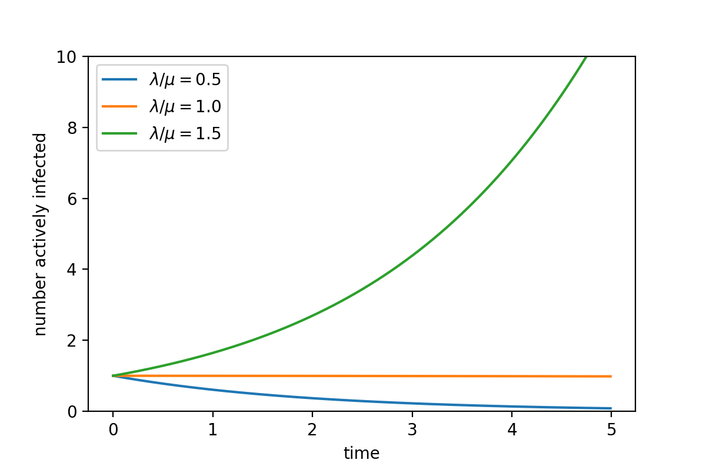
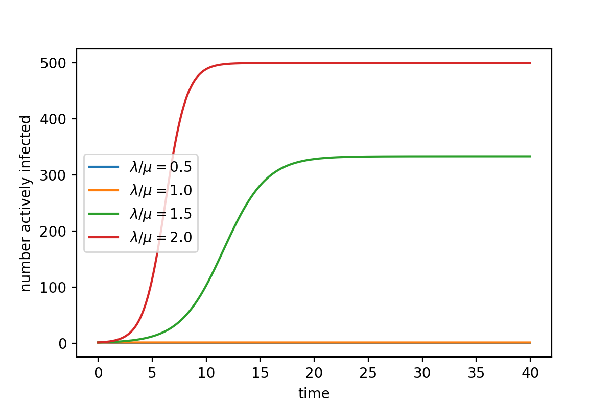

Modelling Disease Spread
Johannes Zierenberg
Max Planck Institute for Dynamics and Self-Organization, Göttingen, Germany
as part of
Current topics in theoretical physics
Max Planck Institute for Dynamics and Self-Organization, Göttingen, Germany
as part of
Current topics in theoretical physics

Outline
General introduction
Mathematical basics
Disease spread on networks
Non-Markovian disease spread
General introduction
#### What we will talk about
* Models need to simplify reality
* Simplification has to be suitable for scientific problem
#### References
* Kiss, Miller, and Simon, "Mathematics of Epidemics on Networks: From Exact to Approximate Models", (Springer International Publishing, Cham, 2017).
* additional sources of examples are referened at bottom of slides
Why should we model disease spread?

Dehning et al., Science (2020)
Li et al., Science (2020)
Maier & Brockmann, Science (2020)
Keeling et al., Nature (2003)
Brockmann & Helbig, Science (2013)
How does a disease spread?
Example COVID-19
Source: Wikimedia Commons (Smurrayinchester)
Cevik et al., BMJ (2020).
What are necessary ingredients to model disease spread?

Modelling disease spread requires simplifications
Simplify disease progression


Simplify progression with distinct states:
Simplify transitions between states:
- susceptible (S)
- exposed (E)
- infectious (I)
- recovered (R)
- hospitalized (H)
- dead (D)
- ...
Simplify transitions between states:
- which states are connected?
- what is the state-duration distribution?
- variability between individuals?
- variability over time?
Simplifications of disease progression are typically encoded in model name
Dehning et al., medrxiv (2020).
Cevik et al., BMJ (2020).
Modelling disease spread requires simplifications
Simplify spreading process

Approximate spatial aspects (who interacts with whom):
Simplify temporal aspects (interaction dynamics):
- agent based (freely moving)
- agent based (network from real data)
- agent based (general networks)
- locally well-mixed (network of compartments)
- globally well-mixed (compartments)
- ...
Simplify temporal aspects (interaction dynamics):
- explicitly model interactions for moving agents
- point-process model of interactions (inter-event distribution?)
Simplifications on spreading dynamics are typically difficult to assess quickly
Modelling disease spread requires simplifications
Disease progression
disease statestransition between states
Spreading process
spatial aspects(freely moving, network, well-mixed)
temporal aspects (interaction dynamics)
Simplifications need to balance realism and simplicity tailored to specific question under investigation
Modelling disease spread requires simplifications
Example: Compartmental SIR


Susceptible
Infected
Recovered
$\lambda$
spreading rate
$\mu$
recovery rate
Disease progression
SIR where I decays with rate $\mu$Spreading process
Well-mixed with uncorrelated contacts at rate $\lambda$ (Poisson process for each infected)
$\dot{S} = -\lambda\frac{S}{N} I$
$\dot{I} = +\lambda\frac{S}{N} I - \mu I$ $= \mu I\left(R_0\frac{S}{N}-1\right) $
$\dot{R} = +\mu I$

$\dot{I} = +\lambda\frac{S}{N} I - \mu I$ $= \mu I\left(R_0\frac{S}{N}-1\right) $
$\dot{R} = +\mu I$

The ratio $\lambda/\mu=R_0$ (basic reproduction number) determines the growth during initial phase of outbreak.
Here, $R_0=1$ is epidemic threshold.
The peak in case numbers arises from infected interacting at rate
$\lambda$ with random person (S, I, or R) of which only an S can
be infected.
The number of total infected depends on $R_0$, $S(0)$, and $R(0)$.
Kermack and McKendrick, Proc. R. Soc. Lond. A (1927).
Modelling disease spread requires simplifications
Example: Compartmental SIS
Susceptible
Infected
$\lambda$
$\mu$
Disease progression
Infected state decays with rate $\mu$Spreading process
Well-mixed with uncorrelated contacts at rate $\lambda$ (Poisson process for each infected)
$\dot{S} = -\lambda\frac{S}{N} I + \mu I$
$\dot{I} = +\lambda\frac{S}{N} I - \mu I$

$\dot{I} = +\lambda\frac{S}{N} I - \mu I$
The ratio $\lambda/\mu$ determines equilibrium between actively infected and susceptible.
Modelling disease spread requires simplifications
Examples of application
| Does initial infection cause outbreak? | (stochastic) network models |
|---|---|
| How does X influence outbreak? | SIR-X |
| How does X influence death numbers? | SIRD-X with age-specific parameters |
Maier & Brockmann, Science (2020)
Hufnagel, Brockmann, Geisel, PNAS (2004)
Modelling disease spread requires simplifications
Discussion
You are a research team with the aim to find the most effective
vaccination protocol during an outbreak. What level of simplification
is suitable?
Start by specifying
Start by specifying
- Most naively, vaccination removes person from susceptible pool. How would this affect the spread? Can you qualitatively draw the number of actively infected over time in a partially vaccinated society?
- What makes vaccination effective? Should it reduce deaths or should it reduce new infections? How does this affect your model?
- How localized is the disease? Is there only a few infected and can you know where? How does this affect your model?
- What do you know about disease transmission? Is it relevant that day-to-day human contacts often occur in clusters? How would this affect your model?
- Do you have data to parameterize the resulting model? If not, how meaningful is your study?
Modelling disease spread requires simplifications
Discussion
You are a research team with the aim to find the most effective
vaccination protocol during an outbreak. What level of simplification
is suitable?
- Level of simplification obviously depends on the precise question and there is no general answer possible. Be critical when reading papers.
- If interested in the general effect of vaccination: SIR + vaccinated compartment can be enough.
- If interested in spatial aspects (local outbreaks): Interaction network (!parameterized!) inlcuding point of origin and stochastic effects.
- If interested on individual basis (e.g. influential spreader): Full (dynamic) contact network but now the level of vaccination protection becomes relevant.
Level of detail should be consistent across model! If one incorporates
too many details of specific component, then one easily misses
relevant correlations.
$\to$ Simple models are powerful.
$\to$ Simple models are powerful.
Hufnagel, Brockmann, Geisel, PNAS (2004)
Maier & Brockmann, Science (2020)
General introduction
#### What have we learned?
* Models simplify reality on different levels (disease progression, spreading dynamics)
* Level of detail should be consistent (avoid making single compontent extremely realistic while keeping others utterly simple)
* Simplifications have to be well motivated and re-evaluated when drawing conclusions
Questions?
Outline
General introduction
Mathematical basics
Disease spread on networks
Non-Markovian disease spread
Mathematical basics
#### What we will talk about
* Stochastic representation of disease spread
* Deterministic representation of disease spread
* How do they connected and where do they differ
#### References
* Kiss, Miller, and Simon, "Mathematics of Epidemics on Networks: From Exact to Approximate Models", (Springer International Publishing, Cham, 2017).
* Gillespie, Stochastic Simulation of Chemical Kinetics, Annual Review of Physical Chemistry 58, 35 (2007).
* additional sources of examples are referened at bottom of slides
Outline
General introduction
Mathematical basics
Disease spread on networks
Non-Markovian disease spread
Simulation: SIR Modell als chemische Reaktionsgleichung
Susceptible
Infected
Recovered
$\lambda$
spreading rate
$\mu$
recovery rate
$$
S + I \overset{\lambda}{\to} I + I\\
I\overset{\mu}{\to} R
$$
Ansteckende Personen erholen sich zufällig mit rate $\mu$,
$\to$ Gesamtrate Erholung $\mu I \phantom{\frac{S}{N}}$
Ansteckende Personen infizieren zufällig getroffene Person mit rate $\lambda$,
$\to$ Gesamtrate Infektion $\lambda I \frac{S}{N}$
Gesamtrate beliebiges Ereignis $\left(\mu + \lambda \frac{S}{N}\right) I$
$\to$ Gesamtrate Erholung $\mu I \phantom{\frac{S}{N}}$
Ansteckende Personen infizieren zufällig getroffene Person mit rate $\lambda$,
$\to$ Gesamtrate Infektion $\lambda I \frac{S}{N}$
Gesamtrate beliebiges Ereignis $\left(\mu + \lambda \frac{S}{N}\right) I$
Monte Carlo 101: Nichtgleichgewicht
Markov chain Monte Carlo Simulationen sind nur möglich, wenn es eine
stationäre Verteilung gibt. Also für Systeme im Gleichgewicht.
Wir können Systeme im Nichtgleichgewicht dennoch simulieren, wenn wir
wissen wie sich die Wahrscheinlichkeitsverteilung über die Zeit ändert.
Mastergleichung:
$\dot{P}(x,t) = \int dx^\prime \left[P(x^\prime)p(x^\prime\to x) - P(x)p(x\to x^\prime)\right]$
Kinetic Monte Carlo: Simulation der Entwicklung der
Mastergleichung für iid Poisson Prozesse ($x\to x^\prime$) mit entsprechend bekannten raten $p(x\to x^\prime)$.
Dies ist die Basis für chemische Reaktionsgleichungen
Beispiel: $S + I\to I + I$ mit rate $\lambda$, $I\to R$ mit rate $\mu$ $$\dot{P}(S,I,t) = \lambda\frac{(S+1)(I-1)}{N}P(S+1,I-1,t)\\ -\left(\lambda \frac{SI}{N}+\mu I\right)P(S,I,t)\\ +\mu (I+1)P(S,I+1,t) $$ (Annahme: Massenwirkungsgesetz)
Beispiel: $S + I\to I + I$ mit rate $\lambda$, $I\to R$ mit rate $\mu$ $$\dot{P}(S,I,t) = \lambda\frac{(S+1)(I-1)}{N}P(S+1,I-1,t)\\ -\left(\lambda \frac{SI}{N}+\mu I\right)P(S,I,t)\\ +\mu (I+1)P(S,I+1,t) $$ (Annahme: Massenwirkungsgesetz)

Simulation: Kinetic Monte Carlo (Gillespie)

Algorithmus:
1. Erzeuge Anfangsbedingung ($S=S_0$, $I=I_0$, $R=R_0$) an $t=t_0$
2. Berechne Raten $a=\left[\mu I, \lambda \frac{S}{N}I\right]$
3. Ziehe Zeit zum nächsten Ereignis $\Delta t = \frac{1}{a_1+a_2}\ln\left(\frac{1}{r_1}\right)\sim \text{Exp} \left(\frac{1}{a_1+a_2}\right)$ mit $r_1\in[0,1)$
4. Ziehe nächstes Ereignis $j$ sodass $\frac{1}{\sum_i a_i}\sum_{i=1}^j a_i < r_2\in[0,1)$
Hier: Erholung wenn $r_2 < a_1/(a_1+a_2)\phantom{>}$ andernfalls Infektion
5. $t=t+\Delta t$ und realisiere Ereignis (Erholung: $I-1$, $R+1$; Infektion $S-1$, $I+1$).
6. Falls $t < T\phantom{>}$ gehe zu 2.
1. Erzeuge Anfangsbedingung ($S=S_0$, $I=I_0$, $R=R_0$) an $t=t_0$
2. Berechne Raten $a=\left[\mu I, \lambda \frac{S}{N}I\right]$
3. Ziehe Zeit zum nächsten Ereignis $\Delta t = \frac{1}{a_1+a_2}\ln\left(\frac{1}{r_1}\right)\sim \text{Exp} \left(\frac{1}{a_1+a_2}\right)$ mit $r_1\in[0,1)$
4. Ziehe nächstes Ereignis $j$ sodass $\frac{1}{\sum_i a_i}\sum_{i=1}^j a_i < r_2\in[0,1)$
Hier: Erholung wenn $r_2 < a_1/(a_1+a_2)\phantom{>}$ andernfalls Infektion
5. $t=t+\Delta t$ und realisiere Ereignis (Erholung: $I-1$, $R+1$; Infektion $S-1$, $I+1$).
6. Falls $t < T\phantom{>}$ gehe zu 2.
Simulation: Gruppenarbeit
Standardannahme, dass Alle mit Allen in Kontakt (well mixed), Infektion/Heilung unabhängige Poissonprozesse mit Reaktionsgleichungen
$$
S + I \overset{\lambda}{\to} I + I\\
I\overset{\mu}{\to} R
$$
1. Skiziert die zu erwarteten Infektionszahlen als Funktion der Zeit für $\lambda/\mu = 0.5, 1.0, 2.0$ ("Reproduktionszahl").
2. Wie sieht für $\lambda/\mu=1.0$ eine typische Realisation der aktiven Infektionen $I$ aus?
3. Was erwartet ihr, wenn nicht mehr Alle mit Allen wechselwirken sondern die Ausbreitung auf einem (komplexen) Netzwerk stattfindet. Zum Beispiel einem Ring? Welche Rolle hat $\lambda/\mu$ jetzt? Was bedeutet $\lambda=\mu$?
2. Wie sieht für $\lambda/\mu=1.0$ eine typische Realisation der aktiven Infektionen $I$ aus?
3. Was erwartet ihr, wenn nicht mehr Alle mit Allen wechselwirken sondern die Ausbreitung auf einem (komplexen) Netzwerk stattfindet. Zum Beispiel einem Ring? Welche Rolle hat $\lambda/\mu$ jetzt? Was bedeutet $\lambda=\mu$?
Simulation: Beispiele
$\mu=1/7$, $\lambda=2/7$, $N=10^5$, $R=0$, $I_0=10$

$\mu=1/7$, $\lambda=2/7$, $N=10^5$, $R=0$, $I_0=1$


Wir können die Wahrscheinlichkeit ausrechnen, dass eine einzelne Infektion keine weiteren verursacht:
Verteilung infektiöse Periode $\Delta t$:
$P(\Delta t) = \mu e^{-\mu\Delta t}$
Wahrscheinlichkeit keine Infektion in $\Delta t$: $p(\text{no event}) = e^{-\lambda \Delta t}$
Wahrscheinlichkeit keine Infektion:
$ p =\int_0^\infty d\Delta t\, e^{-\lambda \Delta t}\, \mu e^{-\mu\Delta t}$ $\phantom{p} =\frac{\mu}{\mu+\lambda}\int_0^\infty d\Delta t\,(\mu+\lambda) e^{-(\mu+\lambda) \Delta t}$
$\phantom{p} =\frac{\mu}{\mu+\lambda}$
Verteilung infektiöse Periode $\Delta t$:
$P(\Delta t) = \mu e^{-\mu\Delta t}$
Wahrscheinlichkeit keine Infektion in $\Delta t$: $p(\text{no event}) = e^{-\lambda \Delta t}$
Wahrscheinlichkeit keine Infektion:
$ p =\int_0^\infty d\Delta t\, e^{-\lambda \Delta t}\, \mu e^{-\mu\Delta t}$ $\phantom{p} =\frac{\mu}{\mu+\lambda}\int_0^\infty d\Delta t\,(\mu+\lambda) e^{-(\mu+\lambda) \Delta t}$
$\phantom{p} =\frac{\mu}{\mu+\lambda}$
Simulation: Mastergleichung vs Differentialgleichung
$\newcommand\mycolv[1]{\begin{bmatrix}#1\end{bmatrix}}$
Mastergleichung:
$ \dot{P}(S,I,t) = \lambda\frac{(S+1)(I-1)}{N}P(S+1,I-1,t) +\mu (I+1)P(S,I+1,t) - \left(\lambda \frac{SI}{N} + \mu I\right)P(S,I,t)$ $ \dot{P}\left(x,t\right) = a_1\left(x-\nu_1\right)P\left(x-\nu_1,t\right) + a_2\left(x-\nu_2\right)P\left(x-\nu_2,t\right) - a_1\left(x\right) P\left(x,t\right) - a_2\left(x\right) P\left(x,t\right) $ $ \phantom{\dot{P}\left(x,t\right)} = \sum_j a_j\left(x-\nu_j\right)P\left(x-\nu_j,t\right) - a_j\left(x\right) P\left(x,t\right) $
Erwaruntgswert $\langle f(x)\rangle = \sum_x f(x) P(x,t)$, z.B. Mittelwert $\langle x\rangle = \sum_x x P(x,t)$
$d\frac{\langle x\rangle}{dt} = \sum_x x \dot{P}(x,t) = \sum_x \sum_j x a_j\left(x-\nu_j\right)P\left(x-\nu_j,t\right) - x a_j\left(x\right) P\left(x,t\right)$ $\phantom{d\frac{\langle x\rangle}{dt}= \sum_x x \dot{P}(x,t)} = \sum_j \sum_x (x+\nu_j) a_j\left(x\right)P\left(x,t\right) - x a_j\left(x\right) P\left(x,t\right)$ $\phantom{d\frac{\langle x\rangle}{dt}= \sum_x x \dot{P}(x,t)} = \sum_j \nu_j\langle a_j\left(x(t)\right)\rangle\approx \sum_j \nu_ja_j\left(\langle x(t)\rangle\right)$
In unserem Fall $x=\mycolv{S\\I}$, $\nu_1=\mycolv{-1\\1}$, $\nu_2=\mycolv{0\\-1}$, $a_1(x)=\lambda\frac{SI}{N}$, $a_2(x)=\mu I$
$\qquad\qquad\qquad d\frac{\langle x\rangle}{dt} = \mycolv{dS/dt\\ dI/dt} = \mycolv{-1\\1}\lambda\frac{SI}{N}+\mycolv{0\\-1}\mu I = \mycolv{-\lambda \frac{S}{N} I\\ \left(\lambda \frac{S}{I} - \mu\right)I}$
$ \dot{P}(S,I,t) = \lambda\frac{(S+1)(I-1)}{N}P(S+1,I-1,t) +\mu (I+1)P(S,I+1,t) - \left(\lambda \frac{SI}{N} + \mu I\right)P(S,I,t)$ $ \dot{P}\left(x,t\right) = a_1\left(x-\nu_1\right)P\left(x-\nu_1,t\right) + a_2\left(x-\nu_2\right)P\left(x-\nu_2,t\right) - a_1\left(x\right) P\left(x,t\right) - a_2\left(x\right) P\left(x,t\right) $ $ \phantom{\dot{P}\left(x,t\right)} = \sum_j a_j\left(x-\nu_j\right)P\left(x-\nu_j,t\right) - a_j\left(x\right) P\left(x,t\right) $
Erwaruntgswert $\langle f(x)\rangle = \sum_x f(x) P(x,t)$, z.B. Mittelwert $\langle x\rangle = \sum_x x P(x,t)$
$d\frac{\langle x\rangle}{dt} = \sum_x x \dot{P}(x,t) = \sum_x \sum_j x a_j\left(x-\nu_j\right)P\left(x-\nu_j,t\right) - x a_j\left(x\right) P\left(x,t\right)$ $\phantom{d\frac{\langle x\rangle}{dt}= \sum_x x \dot{P}(x,t)} = \sum_j \sum_x (x+\nu_j) a_j\left(x\right)P\left(x,t\right) - x a_j\left(x\right) P\left(x,t\right)$ $\phantom{d\frac{\langle x\rangle}{dt}= \sum_x x \dot{P}(x,t)} = \sum_j \nu_j\langle a_j\left(x(t)\right)\rangle\approx \sum_j \nu_ja_j\left(\langle x(t)\rangle\right)$
In unserem Fall $x=\mycolv{S\\I}$, $\nu_1=\mycolv{-1\\1}$, $\nu_2=\mycolv{0\\-1}$, $a_1(x)=\lambda\frac{SI}{N}$, $a_2(x)=\mu I$
$\qquad\qquad\qquad d\frac{\langle x\rangle}{dt} = \mycolv{dS/dt\\ dI/dt} = \mycolv{-1\\1}\lambda\frac{SI}{N}+\mycolv{0\\-1}\mu I = \mycolv{-\lambda \frac{S}{N} I\\ \left(\lambda \frac{S}{I} - \mu\right)I}$
Gillespie, Annu. Rev. Phys. Chem. (2007)
Simulation: Stochastisch vs Deterministisch
Differentialgleichung:
$$
dS/dt = -\lambda\frac{S}{N} I\phantom{+\mu I}\\
dI/dt = \left(\lambda\frac{S}{N} -\mu \right)I\\
dR/dt = \phantom{+}\mu I \phantom{-\lambda\frac{S}{N} I}
$$

Annahmen: Raten sind linear bzgl. der Populationen (keine multi-molekularen Wechselwirkungen),
1. $\dot{P}(x,t) = \sum_j a_j(x-\nu_j)P(x-\nu_j,t)-a_j(x)P(x,t)$
2. $\sum_j \nu_j\langle a_j\left(x(t)\right)\rangle\approx \sum_j \nu_ja_j\left(\langle x(t)\rangle\right)$
Hier also eine Approximation weil $a_1(S,I) = \lambda SI/N$ und $S$, $I$ abhängig
1. $\dot{P}(x,t) = \sum_j a_j(x-\nu_j)P(x-\nu_j,t)-a_j(x)P(x,t)$
2. $\sum_j \nu_j\langle a_j\left(x(t)\right)\rangle\approx \sum_j \nu_ja_j\left(\langle x(t)\rangle\right)$
Hier also eine Approximation weil $a_1(S,I) = \lambda SI/N$ und $S$, $I$ abhängig
Simulation: Beyond well mixed
In der Realität finden Krankheitsausbrüche in komplexen (sich zeitlich ändernden) Netzwerken statt.
Beachte, dass in diesem Fall die Raten pro node spezifiziert werden:
$a = [a_1, ...., a_N]$
Für den Ring kann der Prozess mit jedem neuen Knoten wieder mit hoher Wahrscheinlichkeit aussterben:
$p(\text{no subsequent infection}) = \frac{\mu}{\mu+\lambda}$
$a = [a_1, ...., a_N]$
Für den Ring kann der Prozess mit jedem neuen Knoten wieder mit hoher Wahrscheinlichkeit aussterben:
$p(\text{no subsequent infection}) = \frac{\mu}{\mu+\lambda}$

Die Schwierigkeit ist, dass alle diese Verfeinerungen Informationen
über die Struktur und auch Dynamik dieser Netzwerke brauchen.
Manchmal bleibt einfacher doch besser ... vor allem wenn die Ergebnisse im Modellraum interpretiert werden.
Manchmal bleibt einfacher doch besser ... vor allem wenn die Ergebnisse im Modellraum interpretiert werden.
https://github.com/benmaier/epipack#examples
Simulation: Kurzer Einblick in nicht-markovianische Dynamik
Nur Fall 2 (exponentielle inter-event Verteilung) kann mit Gillespie simuliert werden.
Mögliche Alternative ist eine "event queue".
Mögliche Alternative ist eine "event queue".

Cevik et al., BMJ (2020).
Simulation: Was haben wir gelernt?
Zusammenfassung
Monte Carlo 101
Inferenz Krankheitsparameter
Simulation stochastischer Krankheitsausbreitung
Hands-on Aufgaben
Gruppen a 3 Personen; bereitet bitte eine kurze Präsentation (max. 2 Minuten/2Slides) vor.
1. Implementiert das stochastische SIR Modell mit dem Gillespie Algorithmus und stellt die Ergebnisse grafisch dar.
(z.B. $\mu=1/7$, $\lambda=2/7$, $N=10^5$, $R_0=0$, $I_0=10$, 1 Messpunkt pro Tag)
2. Für welche Anfangsbedingungen wird es schwierig werden die Modellparameter zu inferieren? Warum?
Falls genügend Zeit wählt eines von den folgenden:
3a. Inferiert die Modellparameter mit Bayesian inference (exponential growth, einfache Parameter updates wie im Beispiel)
3b. Implementiert change points in der stochastischen Simulation. Wie wirkt sich das auf den Ensemblemittelwert aus? Und wie auf die einzelnen Trajektorien? Welche Rolle spielt der "absorbing state"?
1. Implementiert das stochastische SIR Modell mit dem Gillespie Algorithmus und stellt die Ergebnisse grafisch dar.
(z.B. $\mu=1/7$, $\lambda=2/7$, $N=10^5$, $R_0=0$, $I_0=10$, 1 Messpunkt pro Tag)
2. Für welche Anfangsbedingungen wird es schwierig werden die Modellparameter zu inferieren? Warum?
Falls genügend Zeit wählt eines von den folgenden:
3a. Inferiert die Modellparameter mit Bayesian inference (exponential growth, einfache Parameter updates wie im Beispiel)
3b. Implementiert change points in der stochastischen Simulation. Wie wirkt sich das auf den Ensemblemittelwert aus? Und wie auf die einzelnen Trajektorien? Welche Rolle spielt der "absorbing state"?